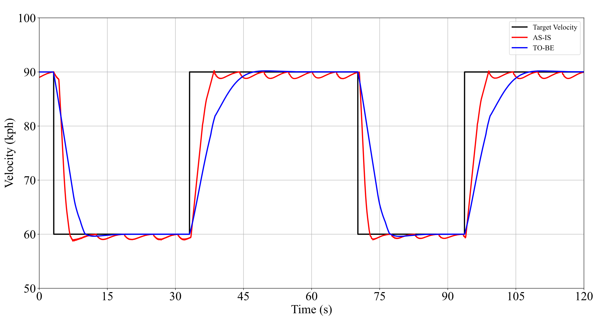
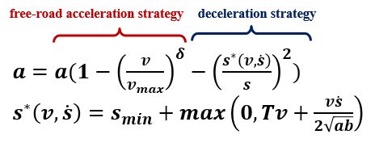
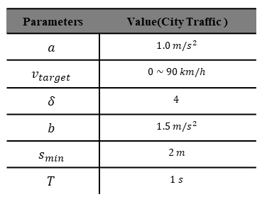

업데이트 소식 - SIM Drive 신규 버전 출시¶
2023년 SIM Drive 신규 버전(버전명: 23.R1.0)이 출시되었습니다.
이번 릴리스 버전, 23.R1.0에는 지난 베타 버전으로 제공한 다양한 기능을 병합하였으며, 기존 정규 버전의 주요 기능을 일부 개선하였습니다.
특히, 교육 및 범용으로 제공하는 기본 프리셋 버전인 SIM Drive ST의 활용성을 높이기 위해 센서, 환경, 시나리오와 같은 시뮬레이터 주요 기능의 사용성을 강화했습니다.
주요 하이라이트¶
SIM Drive 23.R1.0에 새롭게 추가된 기능 및 개선 사항에 대한 주요 하이라이트는 다음과 같습니다.
-
일본 도로 교통법에 맞는 맵과 신호등 처리 로직을 포함하여 국방 분야 시뮬레이션 평가에 활용할 수 있는 오브젝트 모델이 추가되었습니다.


-
빌트인 시나리오 에디터의 웨이포인트(Waypoint)를 생성 기능을 통해 보행자 이동에 따른 보다 구체적인 시나리오를 설계하고 수행할 수 있습니다.

-
시뮬레이션 환경에 대한 날씨 효과 및 마찰력 옵션 추가:
보다 현실감 있는 시뮬레이션을 위해 날씨의 효과 강도(Effect Strength)와 안개 밀도 및 간격, 그리고 도로 마찰력을 조절할 수 있는 사용자 옵션을 추가하였습니다.

-
차량 모델의 주행 시 발생하는 채터링 이슈를 해결하여 Kinematics와 Dynamics 종방향 제어에 대한 주행 성능을 개선하였으며, Dynamics 모델의 가속도 제어 성능을 향상하였습니다.
새로운 기능 요약¶
이번 릴리스에 새롭게 추가된 기능은 다음과 같습니다.
맵과 오브젝트의 다양성 확대¶
모라이 SIM Drive에서는 디지털트윈 자동화 구축 기술을 적용한 정밀지도(HD Map) 데이터 기반의 3D 맵과 다양한 오브젝트 모델을 제공합니다.
이번 23.R1.0 릴리스에서는 글로벌 표준의 주행 환경과 교통 법규에 맞는 보다 현실감 있는 시뮬레이션을 위한 맵과 오브젝트 모델을 추가했습니다.
첫 번째로, 일본 주행 환경과 교통법에 따른 좌측 운전자(LHT) 맵과 MGeo 데이터를 추가했습니다.

기존 MGeo 데이터의 LHT(운전자 좌측)/RHT(운전자 우측) 맵을 구분하고 LHT 맵에 대한 정지선 주행 로직을 추가했습니다. 또한 향후 릴리스 버전에는 ‘비보호 우회전’ 도로 교통법을 지원하기 위한 신호등 처리 로직을 포함할 계획입니다.

두 번째로, 국방 분야의 자율주행 무기체계 시뮬레이션을 위해 실제 훈련장을 연상케하는 야지맵과 군수용 차량과 더불어 군인, 웅덩이, 철조망과 같은 장애물 오브젝트를 추가하였습니다.

카메라 센서의 3D BBOX 정답 데이터¶
23.R1.0의 카메라 센서에서는 검출 오브젝트에 대한 3D Bounding Box(3D BBox) 데이터를 제공합니다.
3D BBox 데이터는 4개의 평면 좌표값을 가지는 2D BBox 데이터에 비해 8쌍의 3축 Global 좌표(x, y, z)로 구성되어, 장애물의 위치 정보를 보다 정확하게 파악하기 위한 학습 데이터로 활용할수 있습니다.
SIM에서 저장한 2D/3D BBox 데이터는 기본적으로 텍스트 형태로 추출지만, 센서 편집 모드에 추가된 Viz Bounding Box 2D/3D 을 이용하면 특정 오브젝트에 대한 2D/3D BBox를 시뮬레이터 상에서 바로 확인할 수 있습니다.
정밀 센서의 최신 사양을 지원하는 신규 모델 추가¶
자율주행 기술에서는 인지 성능을 높이기 위한 정밀 센서의 역할이 매우 중요합니다.
SIM Dirve는 카메라, 2D/3D 라이다, 레이더, IMU, GNSS에 이르기까지 실제 센서와 동일한 검출 데이터 형식과 통신 방식을 지원하는 다양한 센서 모델을 제공합니다.

이번 릴리스에서는 자율주행 인지 모델에서 요구하는 각 센서 사양에 맞추어 카메라, 라이다, 레이더에 대한 최신 센서 모델이 새롭게 추가되었습니다.
우선 카메라와 2D 라이다의 경우, 검출 로직은 기존과 동일하나 시뮬레이터 내부적으로 검출 데이터를 가시화하는 그래픽 모델이 추가되었습니다.
특히, 레이더 센서의 경우, 포인트 단위의 검출 방식에 오브젝트 단위의 검출 방식이 추가되어, 기존 레이터 모델에 비해 오브젝트에 대한 트래킹 정보 또한 검출할 수 있습니다. 따라서 현재 단일 프레임 상의 검출 데이터와 이전에 전송된 여러 개의 프레임 데이터를 비교하여 해당 오브젝트의 속도, 위치 값을 계산할 수 있습니다.
보행자 시나리오 개선을 위한 웨이포인트 생성 기능¶
SIM Drive에서는 직접 시나리오를 생성하고 수행할 수 있는 빌트인 시나리오 에디터를 제공합니다.
이번 릴리스의 시나리오 에디터에서는 보행자 이동에 따른 웨이포인트(Waypoint) 생성 기능을 추가하여 보다 구체적으로 보행자 시나리오를 설계하고 수행할 수 있습니다.

지난 버전의 보행자 시나리오와 비교하여, Waypoint 기능이 추가된 보행자 시나리오 로직은 아래와 같습니다.
| 기존 보행자 시나리오 | Waypoint 기반 보행자 시나리오 |
|---|---|
|
보행자는 Moving Distance 대신 사용자가 설정한 Waypoint를 따라 이동
|
시뮬레이션 환경에 대한 날씨 효과 및 마찰력 옵션 추가¶
SIM Drive의 시뮬레이션 환경에서는 비, 안개, 악천후의 날씨를 비롯하여 주/야간 시간대에 따른 조도 변화를 설정할 수 있습니다.
현실 도메인에는 다양한 환경 데이터를 취득하기 어려운 제약 사항이 존재하지만, 가상 도메인의 SIMDrive를 사용하면 현실과 동일한 다양한 환경 조건의 학습 데이터를 매우 간편하게 취득할 수 있습니다.
23.R1.0에서는 보다 현실감 있는 시뮬레이션을 위해 날씨 별 효과 강도 및 도로 마찰력을 제어하는 사용자 옵션을 추가하였습니다.
악천후 날씨의 경우 Storm, Rainy, Snowy 효과 강도를 보다 세밀하게 제어하도록 Effect Strength 옵션을 추가하였으며 안개 낀 날씨의 경우, Foggy Density / Distance(안개 밀도 및 간격) 옵션을 추가하였습니다.

|

|
|---|
또한 도로에 대한 Multiplier(마찰 계수) 옵션을 추가하여, 눈이나 비와 같은 날씨에 영향을 받을 수 있는 도로면 마찰 강도를 0 ~ 1 사이로 제어할 수 있습니다.

주요 개선 사항 요약¶
이전에 배포된 버전(22.R4.0) 대비, 이번 릴리스에 반영된 주요 개선 사항을 알아봅니다.
차량 모델의 종방향 거동 성능 개선¶
차량의 종방향 주행 시 발생하던 채터링(떨림 현상) 문제를 해결하여 차량의 '종방향 거동 성능'을 향상하였습니다.
이에 대한 해결 과정은 아래와 같으며, 결과적으로 SIM Drive의 시뮬레이션을 활용하면 보다 정확하게 SUT를 검증할 수 있습니다.
※ SUT: System Under Test, 평가 대상 하드웨어 및/또는 소프트웨어.
- 차량의 목표 가속도를 생성하는 Intelligent Driver Model(IDM) 적용하여 종방향 판단 및 거동 계획 로직를 개선
- 차량의 종방향 상태에 따른 Transition Model을 적용하여 목표 속도를 추종하는 Cruise Control 성능 개선
- 차량의 목표 가속도 출력을 위한 페달 및 브레이크 입력 시 떨림 해결, 종방향 거동 제어 개선

(검정색 목표 속도 대비 파란색 출력 속도)
🍀 Intelligent Driver Model(IDM)이란¶
Intelligent Driver Model(IDM)은 차량의 주행 모델링에 사용되는 제어 알고리즘으로, 실제 교통 시뮬레이션에 많이 활용됩니다.
IDM 알고리즘 및 구성 파라미터는 아래와 같습니다.


a: Max Acceleration
δ: Acceleration Exponent
v_target: Target Speed
b: Comfort Deceleration
s_min: Min Distance
T: HeadwayTime